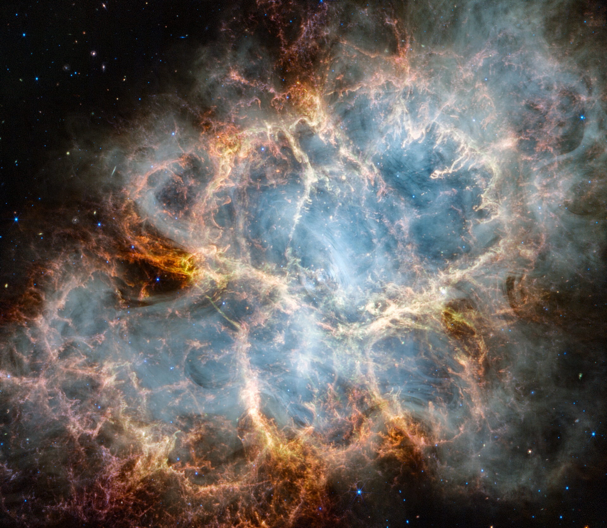

Pioneering Missions
Space exploration has led to monumental discoveries, from robotic probes to human missions beyond Earth's orbit. These missions not only advance our understanding of space but also drive technological innovation here on Earth.
The Beauty of the Cosmos

Images like this, of the Crab Nebula, inspire the next generation of explorers and scientists.
Historic Milestones
- Launch of Sputnik 1 (1957)
- Yuri Gagarin's first human spaceflight (1961)
- Apollo 11 Moon landing (1969)
- Launch of the International Space Station (ISS) (1998)